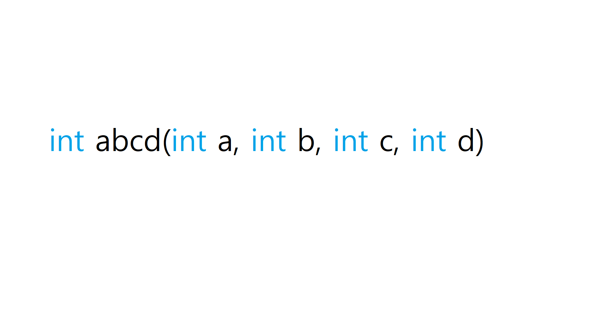
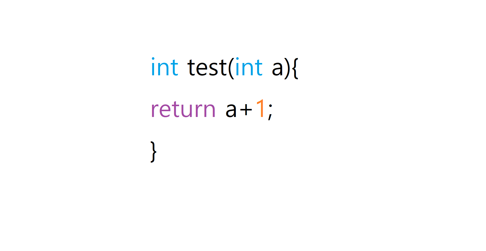
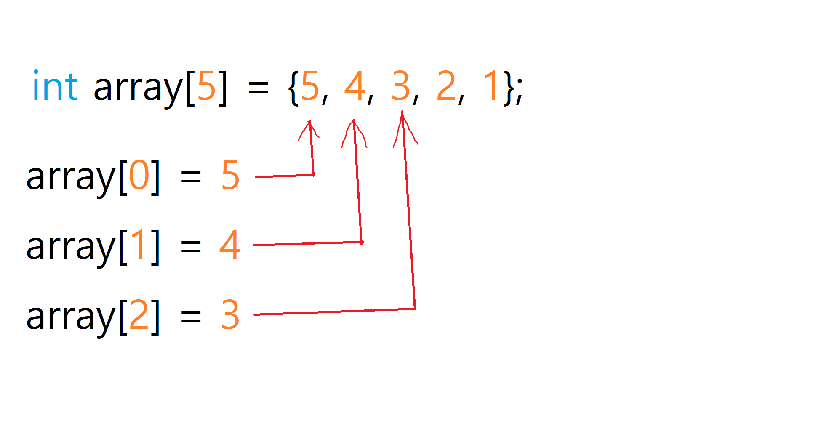
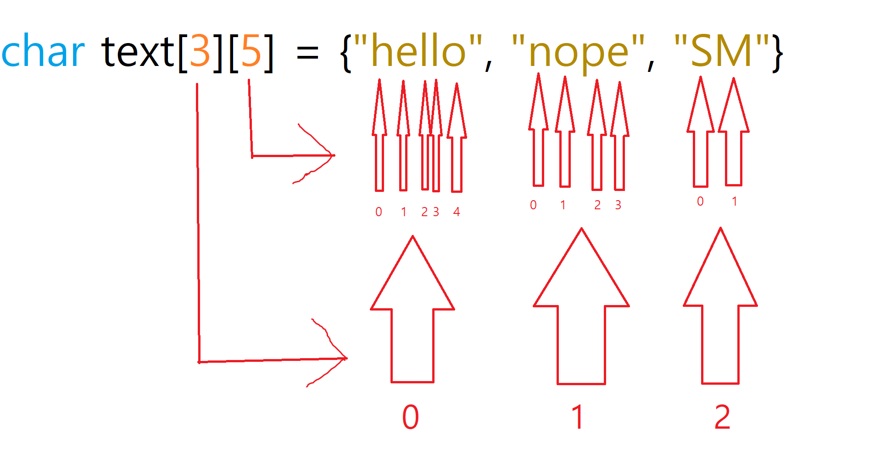

변수 선언
변수를 선언 하는방법은 (자료형) (이름) (값) 이러하다
자료형은 위키백과: 자료형 또는 데이터 타입은 컴퓨터 과학과 프로그래밍 언어에서 실수치, 정수, 불린 자료형 따위의 여러 종류의 데이터를 식별하는 분류이다
int 는 intager(32비트 부호 정수형)(그냥 정수) 이기때문에 32비트 부호 정수형 데이터를 의미하는것이다.
float 은 floating-point number(부동소수점 수)(그냥 실수) 이기때문에 부동소수점 수형 데이터를 의미하는것이다
char 는 character (8비트 부호 정수형)(그냥 문자 한개) 이기때문에 8비트 정수형 데이터를 의미하는것이다
bool 는 boolean (1비트 부호 없는 정수형)(그냥 논리 자료형 아니면 그냥 참(true) 랑 거짓(false) 만 있는 자료형) 이기때문에 1비트 정수형 데이터를 의미하는것이다
(부호 는 쉽게 말해서 마이너스 숫자가 있는지를 따지는 말이다 마이너스 숫자라는 게있으면 부호가 있는거고 없으면 부호가 없는거다)
다른 자료형끼리는 대입 그리고 연산, 출력 등 을 할수없다 그렇치만 종종 되기도 한다(컴파일러가 알아서 해줌)
예를들어 int 형에다가 float 형 숫자 0.01 를 넣는다는지 혹은 char 에 int 형 숫자 500을 넣는다는지 이다(그런데 char 에다가 int 는 어차피 둘다 정수형이라서 괜찮다 그런데 char 는 int 보다 작기때문에 오류가 나기 쉽다. bool 도 마찬가지이다)
함수 만들기
함수를 만드는방법은 (자료형) (이름) (매개변수){(코드)} 이다
예시:
int test_func(int value, bool Gay){
int result;
result = value + Gay;
return value;
}
매개변수는 위키백과: 변수의 특별한 한 종류로서, 함수 등과 같은 서브루틴의 인풋으로 제공되는 여러 데이터 중 하나를 가리키기 위해 사용된다
좀 어려운 말인것같은데 일단 쉽게 정리해서 말을 하겠다 일단 쉽게 이해할려면 함수를 어떻게 사용해야하는지를 알야한다
자 만약 이런 함수가 있다고 치자 한번 이함수를 사용해보자
일단 함수를 사용할때는 자료형을빼야한다 그거는 나중에 설명할것이다
일단 abcd 함수에는 4개의 이름이있다(a 랑 b,c,d) 재가 한번 여기 이름에다가 어떤값을 넣어볼것이다 그리고 한번 해석을 해볼것이다
abcd(4, 1, 7, 2);
자 1칸 에 있는 숫자가 4이다 그리고 이름은 a 이다. 한마디로 int a = 4 이다 이말의 즉슨 4 라는 값을 a로 전달해준다는 뜻이다
이게 바로 전달인자(argument) 이다 그리고 a 가 매개변수(전달되는 변수)이다
그래서 매개변수에 따라 전달될 값이 많아지거나 적어진다는 뜻이다
이번에는 함수에 자료형이 무슨의미 하는지 알아볼꺼다
자료형이 붙는 이유는 함수 리턴값이 자료형 값이라는 것을 표현하기 위해서이다
리턴 값이란? 반환값이다 말그대로 이다
해석하자면 정수형 매개변수 a 라는 값에 + 1(정수형 값) 을 해주고 리턴을 한다 리턴 값은 무조건 정수형 이여야한다
만약 test 라는 함수를 사용하면 매개변수에있는 값에 +1 된 값이 나오게될거다
int a = test(10);
a 값은 return a+1 라는 코드 때문에 10+1 = 11 이 되어 test() 라는 함수는 11이라는 값이 될것이다 그러면 int a = 11; 이랑 똑같아지는거다
배열이란 쉽게 말해서 만약 100개라는 변수를 선언하고 싶을때 일일이 이름을 적고 값적고 하기싫을때 사용하는것이다
위키백과: 컴퓨터 과학에서 배열(array)은 번호(인덱스)와 번호에 대응하는 데이터들로 이루어진 자료 구조를 나타낸다. 일반적으로 배열에는 같은 종류의 데이터들이 순차적으로 저장되어, 값의 번호가 곧 배열의 시작점으로부터 값이 저장되어 있는 상대적인 위치가 된다.
이것도 이해가 잘안될수도 있으니 코드를 보면서 해석해 나아갈것이다
배열의 시작은 0 에서부터 시작한다 그래서 int array[5] 는 사실 array[4] 까지 값을 주고받을수있다
array[0] = 5 , array[1] = 4 , array[2] = 3 array[3] = 2 , array[4] = 1 이말의즉슨 우리가 5개의 변수를 선언했다고 보면 될것같다
char 형 변수같은경우에는 문자 한개 말고 여러문자들을 썪어서 만들수있다
예를 들어
char text[34] = "hello my name is captain dickhead.";
char[] str = "did you suck dicks? did you suck dicks?";
이런 코드 가 있다
[] 이거의 의미는 컴파일러가 알아서 문자열에 맞게 값을 넣어주라는 뜻이다
그림을 보면서 해석을 하겠다
3 개에 5개라는 들어있다 이 의미는 배열이 배열안에 들어간거랑 똑같다
text[0] 을 출력해보면 "hello" 가 출력될것이다
text[0][2] 을 출력해보면 'l' 이 출력 될것이다
그림을 잘해석하면 2차원 배열이 쉽게 느껴진다 한번 그림이 뚫어지게 보면서 이해 하시기를 바란다
다른 자료형들 은 이렇게 한다
int test[3][3] = {{1, 2, 3}, {5, 6, 7}, {8, 9, 10}};
float test[3][3] = {{0.1, 0.5, 1.0}, {1.1, 1.5, 2.0}, {2.1, 2.5, 3.0}};
bool test[3][3] = {{true, false, false}, {false, true, true}, {false, true, false}};
위키백과: 동적 배열(dynamic array)은 프로그래밍에서 크기가 고정되지 않은 배열을 의미한다.
동적 배열 하는방법은
자료형[] 이름 = new 자료형[배열 사이즈];
int[] num = new int[30];
동적 배열은 위키백과가 말한대로 고정되어있지 않은 배열이다 그래서 쉽게 말하자면 만약 체력을 예로 들면 체력은 계속 값이바뀌니깐 고정되어있는거 보다는 고정되어있지 않은 배열을 사용해야한다 그게 바로 동적 배열이다
조건문 위키백과:컴퓨터 과학에서 조건문이란 프로그래머가 명시한 불린 자료형 조건이 참인지 거짓인지에 따라 달라지는 계산이나 상황을 수행하는 프로그래밍 언어의 특징이다.
이것도 그림을 보고 배워야 이해가 쉬울것이다. 일단 먼저 비교 연산자/관계 연산자 기호를 봐야한다
(==) = 같음(8 == 8)
(!=) = 같지 않음(1 != 2)
(>=) = 같거나 큼(5 >= 4)
(<=) = 같거나 작음(3 <= 3)
(<) = 오른쪽에 있는 수가 왼쪽에있는 수보다 많음(4 < 5)
(>) = 왼쪽에 있는 수가 오른쪽에있는 수보다 많음(5 > 4)
그 다음 이제 조건문 (if) 을 볼것이다
if(값 비교연산자 값){(코드)}
if(5 == 5){
PrintToChatAll("5 = 5!");
}
만약 5가 5랑 같으면 PrintToChatAll 함수를 호출시키는코드이다
if는 만약으로 해석 하면 쉽다 그러면 해석하자면: 만약 5 와 5가 같으면 (코드) 를 실행시켜라! 가 된다
비교 연산자 에 딱맞으면 true(참) 가 나오고 아니면 false(거짓) 가 나온다 5 == 5 는 비교 연산자가 (같음) 이고 5 와 5는 둘다 같으니깐 true(참) 가나온다
그리고 if 는 꼭 true(참) 가 되어야만 (코드) 를 실행 시킨다 false(거짓) 면 else if 혹은 else 로 넘어간다 이거는 나중에 설명한다
그다음에는 이제 논리 연산자 를 알아 볼것이다 논리연산자는 위키백과: 논리 연산 혹은 불 연산은 참, 거짓 두 가지 원소(진리값으로 불림)만 존재하는 집합(환으로 불림)에서의 연산이다. 논리합(OR), 논리곱(AND), 부정(NOT), 배타적 논리합(XOR), 명제, 동치 등이 있다. 이다
좀 어려워 보이는데 그림만 있으면 끝이다 일단 먼저 논리 연산자 기호 먼저 알아가자
(!) = 부정(반대가 되는거다 !true 하면 true(참) 의 반대는 false(거짓) 니깐 false(거짓) 가 되고 !false 하면 false(거짓) 의 반대는 true(참) 니깐 true(참) 가 된다)
(&&) = 논리곱(두개의 값이 모두 true(참) 이여야 하는거다 아니면 false(거짓) 가 된다 true && true 는 둘다 true 이니깐 true 가 된다 true && false 는 한쪽이 false 라서 false 가 된다 )
(||) = 논리합(두개중 1개는 true 이여야 하는거다 아니면 false 가 된다 false || true 하면 두개중에 한개 가 true 이기때문에 true 가 된다)
if(34 == 34 && 41 >= 40)
34 랑 34 랑 같으니깐 true 가 된다 그리고 41 이 40 과 같거나 혹은 그거보다 크니깐 true 가 된다 그래서 true 가 될것이다
if(3 == 3 && 5 > 5 || 33+3 >= 38 && 40 <= 40)
3은 3 이랑 같으니깐 true 된다 5 > 5 는 5 가 5보다 작은것은 아니니깐 false 가 된다 true && false 하면 false 가된다 그리고 33+3 은 36 이고 36 은 38 이랑 같거나 혹은 그거보다 큰게 아니다 그래서 false 가 된다 false || false 하면 false 가 된다 40 은 40 이랑 같거나 혹은 그거보다 크기때문에 true 가 된다 false && true 하면 false 가 된다 그래서 최종값은 false 이다
if(true || false || true || false || true)
true || false 하면 true 가 된다 true || true 하면 true 가 된다 true || false 하면 true 가 된다 true || true 하면 true 가 된다 그래서 최종값은 true 이다
int num1 = 30;
int num2 = 30;
bool boolean = false;
bool boolean2 = false;
if(num2 != 29 && num1 <= 30 && !boolean)
{
boolean2 = !boolean;
}
num2 는 30 이다 30 은 29 랑 같지 않기에 true 가 된다 num1 은 30 이다 30이 30 보다 작거나 혹은 같으므로 true 가 된다 true && true 는 true 이다 boolean은 false 이다 false 의 반대는 true 이기에 true 가된다 true && true 는 true 이다 최종값은 true 이다 그래서 boolean2 = !boolean 이라는 코드를 실행시킨다 boolean 은 false 이기에 boolean2 는 true 가 된다 그래서 boolean2 = true 가 된다
아 만들기 참 힘들다...